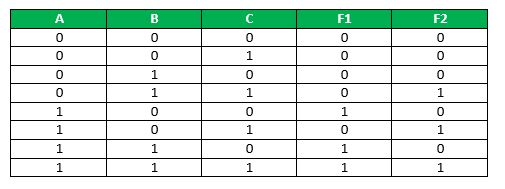

Programmable Logic Array(PLA) is a fixed architecture logic device with programmable AND gates followed by programmable OR gates.
PLA is basically a type of programmable logic device used to build reconfigurable digital circuit. PLDs have undefined function at the time of manufacturing but they are programmed before made into use. PLA is a combination of memory and logic.
Comparison with other Programmable Logic Devices:
- PLA has programmable AND gate array and programmable OR gate array.
- PAL has programmable AND gate array but fixed OR gate array.
- ROM has fixed AND gate array but programmable OR gate array.
PLA is similar to a ROM in concept; however it does not provide full decoding of variables and does not generate all minterms as in the ROM. Though its name consist of word “programmable”, it does not require any type of programming like in C and C++.
Basic block diagram for PLA:

Following Truth table will be helpful in understanding function on no of inputs-

F1 = AB’C’ + AB’C + ABC’ + ABC
on simplifying we get : F1 = AB’ + AC
F2 = A’BC + AB’C + ABC
on simplifying we get: F2 = BC + AC
For realization of above function following circuit diagram will be used.

PLA is used for implementation of various combinational circuits using buffer, AND gate and OR gate. In PLA, all the minterms are not realized but only required minterms are implemented. As PLA has programmable AND gate array and programmable OR gate arra, it provides more flexibility but disadvantage is, it is not easy to use.
Applications:
- PLA is used to provide control over datapath.
- PLA is used as a counter.
- PLA is used as a decoders.
- PLA is used as a BUS interface in programmed I/O.